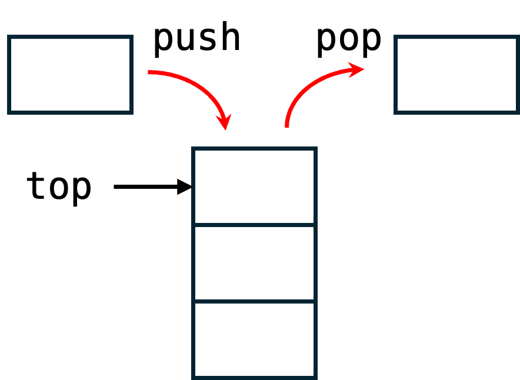
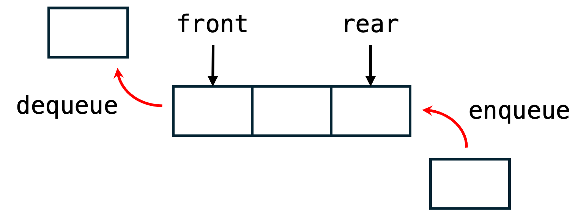

11 データ構造 1
11.1 前回演習の解答
- 授業内小テストの採点結果
- レポート課題2の解説
11.2 本日のメニュー
- スタック
- キュー
11.3 スタックの基本
データを保存–読み出す構造のひとつで，最後に保存したものを最初にとりだす方式（Last-In First-Out; LIFO）のものをスタック（stack）と呼ぶ． 関数の呼び出し関係の表現（コールスタック）や木構造データの深さ優先探索で用いられる．データを縦に積み重ね，データを追加するときは一番上に追加し，取り出すときは一番上からとるイメージを持つと理解しやすい．

スタックに対する基本操作は以下のとおり：
- プッシュ（push）
- データをスタックに追加する
- ポップ（pop）
- スタックからデータを取り出して，スタックから削除する
- ピーク（peek）
- スタックの先頭要素（一番上のデータ）を確認し，削除しない
このほか，スタックに要素があるか否かの確認もよく使う．
11.4 スタックの実装
スタックを実現するには，配列とデータの先頭を表すポインタを使う場合と，リスト構造を使う場合の主に2種類の実装がある． 以下ではリスト構造を使った実装例を見てみよう．
11.4.1 リスト構造によるスタックの実装
スタックに保存するデータ要素ひとつを構造体で定義する．構造体には，データ（ここではintデータひとつ）と，次の要素へのポインタを含み，単方向リスト構造を構成できるようにする．
この後，スタックに対する操作を色々実装するので，1本のスタックそのものも型を定義しておく．実体としては，スタック先頭を表すNode構造体へのポインタである．
新しいスタックを作成したときには，何も要素が入っていない．そこで，先頭要素へのポインタを初期化する関数を作っておく．
11.4.2 プッシュ
プッシュ操作は，メモリ領域を確保して，指定されたデータを保持するNodeをスタックの先頭に付ける．
int push(Stack *s, int newdata) {
Node *newNode = (Node *)malloc(sizeof(Node));
if (newNode == NULL) { // メモリ領域の確保に失敗したとき
return -1; // 異常値 -1 を呼び出し元に返す
}
newNode->data = newdata;
newNode->next = s->top;
s->top = newNode;
return 0;
}ここで，3–5行目のif文は例外処理である． malloc関数は，メモリ確保に失敗した場合にNULLを返す．メモリが確保できなかった場合には，異常を表す-1を呼び出し元にreturnして終了する．
正常系の処理はifブロックの後にある．新しいデータであるnewNode（の指すNode）はスタックの先頭になるので，newNodeの次のノードは従来の先頭であるs->top，新たなスタックの先頭がnewNodeである．
11.4.3 ポップ
ポップ操作の実装例は以下のとおり．
int isEmpty(Stack *s) {
return s->top == NULL;
}
int pop(Stack *s, int *poppedData) {
if (isEmpty(s)) {
return -1; // スタックが空のとき異常値 -1 を呼び出し元に返す
}
Node *poppedNode = s->top;
*poppedData = poppedNode->data;
s->top = poppedNode->next;
free(poppedNode);
return 0;
}ポップ操作を行うスタックが空のとき，異常値を表す-1を呼び出し元に返す． これにはスタックが空か否かを判定する関数isEmptyを別途作成して利用する．
ポップによって先頭ノードpoppedNodeはスタックから削除され，次のノードpoppedNode->nextが新たなスタックの先頭となる．
関数popの戻り値は正常/異常を表すために使うので，読み出したデータは引数として受け取ったポインタに詰めて返す．
11.4.4 ピーク
ピーク操作でも，ポップと同様にスタックが空のときは例外処理を行う． ポップと異なり，ピーク操作ではスタックの先頭ノードのデータを返すが，スタックから削除しない．
11.5 スタックを操作するプログラム例
上述の関数を使って，整数データのスタックを操作するプログラムを下記のように作成した．写経して実行してみよう．
#include <stdio.h>
#include <stdlib.h>
// スタックの要素ひとつを表す構造体
typedef struct node {
int data;
struct node *next;
} Node;
// intデータを保持するスタック
typedef struct stack {
Node *top;
} Stack;
// スタックの初期化
void initStack(Stack *s) { s->top = NULL; }
// プッシュ
int push(Stack *s, int newdata) {
Node *newNode = (Node *)malloc(sizeof(Node));
if (newNode == NULL) { // メモリ領域の確保に失敗したとき
return -1; // 異常値 -1 を呼び出し元に返す
}
newNode->data = newdata;
newNode->next = s->top;
s->top = newNode;
return 0;
}
// スタックが空か？
int isEmpty(Stack *s) { return s->top == NULL; }
// ポップ
int pop(Stack *s, int *poppedData) {
if (isEmpty(s)) {
return -1;
}
Node *poppedNode = s->top;
*poppedData = poppedNode->data;
s->top = poppedNode->next;
free(poppedNode);
return 0;
}
// ピーク
int peek(Stack *s, int *topData) {
if (isEmpty(s)) {
return -1;
}
*topData = s->top->data;
return 0;
}
// スタックの内容を表示
void printStack(Stack *s) {
Node *current = s->top;
while (current != NULL) {
printf("%d ", current->data);
current = current->next;
}
printf("\n");
}
// メモリの解放
void freeStack(Stack *s) {
Node *current = s->top;
while (current != NULL) {
Node *tmp = current;
current = current->next;
free(tmp);
}
s->top = NULL;
}
int main(void) {
Stack s;
initStack(&s);
while (1) {
int menu, x;
printf("プッシュ(1), ポップ(2), ピーク(3), 表示(4), 終了(0): ");
scanf("%d", &menu);
if (menu == 0) {
break;
}
switch (menu) {
case 1:
printf(" プッシュするデータ: ");
scanf("%d", &x);
if (push(&s, x) != 0) {
printf("プッシュに失敗\n");
}
break;
case 2:
if (pop(&s, &x) != 0) {
printf("ポップに失敗\n");
} else {
printf(" ポップしたデータ: %d\n", x);
}
break;
case 3:
if (peek(&s, &x) != 0) {
printf("ピークに失敗\n");
} else {
printf(" ピークしたデータ: %d\n", x);
}
break;
case 4:
printStack(&s);
break;
default:
break;
}
}
freeStack(&s);
return 0;
}11.6 キューの基本
後入れ先出しであるスタックに対して，先入れ先出し（First-In First-Out; FIFO）のデータ構造をキュー（queue）という．待ち行列とも呼ばれ，その名の通り列に並ぶ客が順番に受付されるイメージを持つと理解しやすい．

キューに対する基本操作は以下のとおり．
- エンキュー（enqueue）
- データをキューの末尾に追加する
- デキュー（dequeue）
- キューからデータを取り出して，キューから削除する
- ピーク（peek）
- キューの先頭データを取り出すが，キューから削除しない
11.7 キューの実装
リスト構造を使ったキューの実装を紹介する． 配列と，データの先頭と末尾を表す2つのポインタでも実装できる．
11.7.1 リスト構造によるキューの実装
キューを表す構造体Queueは，先頭ノードへのポインタと末尾ノードへのポインタをメンバにもつ．それ以外はスタックの場合とほぼ同様である．
11.7.2 エンキュー
エンキュー操作では，mallocでNode分のメモリを確保し，与えられたデータを格納してからキューの末尾に接続する．
int enqueue(Queue *q, int data) {
Node *newNode = (Node *)malloc(sizeof(Node));
if (newNode == NULL) {
return -1;
}
newNode->data = data;
newNode->next = NULL;
if (isEmpty(q)) {
q->front = newNode;
q->rear = newNode;
} else {
q->rear->next = newNode; // 末尾ノードのnextにnewNodeをつなぐ
q->rear = newNode; // キューの末尾ポインタを更新
}
return 0;
}3–5行目は前述のメモリ確保に失敗した場合の例外処理である． 7行目以降の正常系の処理では，新たなノードに引数で指定されたデータを格納する． その後，キューの先頭q->frontと末尾q->rearポインタを更新する．既存のキューが空でない場合，末尾ノードのnextポインタにnewNodeを設定することでリストを構成し，更に末尾ポインタq->rearを新たなノードに更新している．
11.7.3 デキュー
デキュー操作の実装例は以下のとおり．
int dequeue(Queue *q, int *data) {
if (isEmpty(q)) {
return -1;
}
Node *f = q->front;
*data = f->data;
q->front = f->next;
if (q->front == NULL) { // キューが空になった場合
q->rear = NULL; // 末尾ポインタもNULLにしておく
}
free(f);
return 0;
}2–4行目はキューが空の例外処理である． 6行目以降の正常系の処理では，先頭ノードのデータを引数のポインタが指定する先に書き込み（7行目），キューの先頭ポインタq->frontを更新している．最後に取り出した要素のメモリ解放を行う．
キューが空になった場合は，末尾ポインタもNULLに初期化している．この記述が無くても，enqueue関数の実装を考えると正常に動作するが，一貫性や安全のためには書いておく方がよい．
11.8 キューを操作するプログラム例
上述の関数を使って，キューを操作するプログラムを下記のように作成した．写経して実行してみよう．
#include <stdio.h>
#include <stdlib.h>
// キューの要素ひとつを表す構造体
typedef struct node {
int data;
struct node *next;
} Node;
// intデータを保持するキュー
typedef struct {
Node *front;
Node *rear;
} Queue;
// キューの初期化
void initQueue(Queue *q) {
q->front = NULL;
q->rear = NULL;
}
int isEmpty(Queue *q) { return q->front == NULL; }
// エンキュー
int enqueue(Queue *q, int data) {
Node *newNode = (Node *)malloc(sizeof(Node));
if (newNode == NULL) {
return -1;
}
newNode->data = data;
newNode->next = NULL;
if (isEmpty(q)) {
q->front = newNode;
q->rear = newNode;
} else {
q->rear->next = newNode; // 末尾ノードのnextにnewNodeをつなぐ
q->rear = newNode; // キューの末尾ポインタを更新
}
return 0;
}
// デキュー
int dequeue(Queue *q, int *data) {
if (isEmpty(q)) {
return -1;
}
Node *f = q->front;
*data = f->data;
q->front = f->next;
if (q->front == NULL) { // キューが空になった場合
q->rear = NULL; // 末尾ポインタもNULLにしておく
}
free(f);
return 0;
}
// ピーク
int peek(Queue *q, int *data) {
if (isEmpty(q)) {
return -1;
}
*data = q->front->data;
return 0;
}
void printQueue(Queue *q) {
Node *current = q->front;
while (current != NULL) {
printf("%d ", current->data);
current = current->next;
}
printf("\n");
}
void freeQueue(Queue *q) {
int tmp;
while (dequeue(q, &tmp) == 0) {
}
}
int main(void) {
Queue q;
initQueue(&q);
while (1) {
int menu, x;
printf("エンキュー(1), デキュー(2), ピーク(3), 表示(4), 終了(0): ");
scanf("%d", &menu);
if (menu == 0) {
break;
}
switch (menu) {
case 1:
printf(" 追加するデータ: ");
scanf("%d", &x);
if (enqueue(&q, x) != 0) {
printf("エンキューに失敗\n");
}
break;
case 2:
if (dequeue(&q, &x) != 0) {
printf("デキューに失敗\n");
} else {
printf(" 取り出したデータ: %d\n", x);
}
break;
case 3:
if (peek(&q, &x) != 0) {
printf("ピークに失敗\n");
} else {
printf(" ピークしたデータ: %d\n", x);
}
break;
case 4:
printQueue(&q);
break;
default:
break;
}
}
freeQueue(&q);
return 0;
}11.9 演習
11.9.1 問題1
char型のデータを格納するスタックを用いて，文字列中のカッコの対応関係をチェックするプログラムを作成せよ．
- 判定対象のカッコは
()と[]とする - カッコの対応が正常なら
1を，不正なら0を返す関数を作成せよ - テスト文字列に対して正常/不正を判定して出力せよ
- テスト文字列1:
"(a[b(c)])"→ 正常 - テスト文字列2:
"([)]"→ 不正（カッコの順序が不正） - テスト文字列3:
"([()]"→ 不正（対応するカッコがない）
- テスト文字列1:
ヒント：
- 文字データを格納するノードでスタックをつくる
- 与えられた文字列を左から順に読み，開カッコが来たらスタックにプッシュし，閉じカッコがきたらスタックからポップする．ポップした文字と今のカッコが対応していれば正常，そうでなければ不正